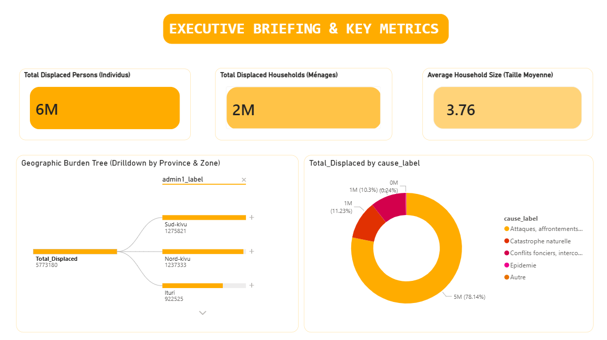

My Data Analytics Projects

Humanitarian Logistics Dashboard
Power BI dashboard designed to monitor aid distribution, displaced populations, logistics performance, and humanitarian KPIs.
Excel • Power Query • Power BI View Project
RDC-Uganda Trade Analysis
Analysis of cross-border trade flows between DRC and Uganda using Excel, SQL, and Power BI.
Excel • SQL • Power BI View Project
School Performance Dashboard
Educational analytics dashboard tracking student performance, attendance, and academic KPIs.
Excel • Power BI View Project
Inventory Management Analysis
Inventory reporting system for monitoring stock levels, reorder points, and warehouse performance.
Excel • Power Pivot View Project
NGO Beneficiary Tracking System
Monitoring and evaluation dashboard used to track beneficiaries, project activities, and impact indicators.
Excel • SQL • Power BI View Project
Sales & Revenue Dashboard
Business intelligence dashboard showing sales trends, profitability, customer segmentation, and KPIs.
Excel • SQL • Power BI View Project